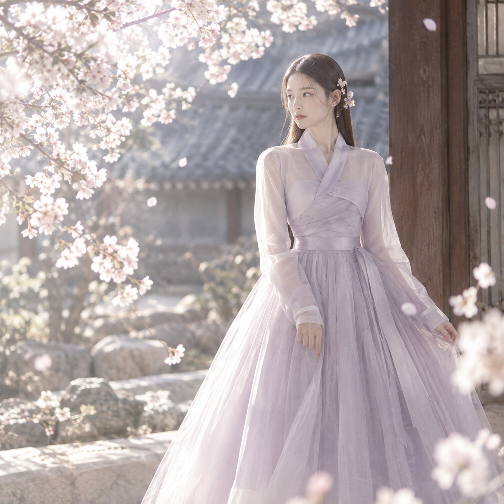
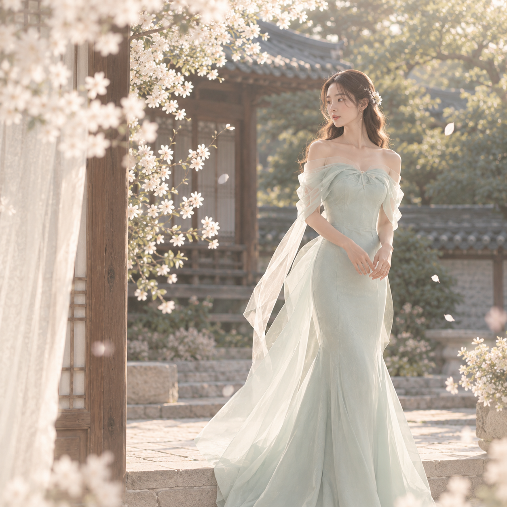

포트폴리오를 불러오는 중입니다.
OUR STORY
브랜드 스토리를 여기에 붙여넣으세요. 문단이 여러 개면 <p> 태그를 복사해서 나눠 넣으면 됩니다.
두 번째 문단 예시입니다.

KEYWORDS

PHILOSOPHY
브랜드 철학 문구를 여기에 적으세요.
PEOPLE & SPACE
사진 설명
사진 설명
WHY US
01
강점 설명을 적으세요.
02
강점 설명을 적으세요.
03
강점 설명을 적으세요.
SELECTED WORK
포트폴리오를 불러오는 중입니다.
VISIT & CONTACT